Restaurante El Cabo


El restaurante está dirigido por Misaki y Blaire. Está situado a la derecha del Colmado, en el barrio bajo del pueblo. Muchos residentes de la ciudad Olive vienen al restaurante para almorzar o cenar. El menú de Misaki se compone principalmente de platos principales, por lo que se recomienda venir aquí a comer cuando quieras recuperar mucha energía. Además, al igual que el Café , comer algunas de las comidas te inspirará a aprender la receta. El bistro abre un poco tarde, a las 12:00 pm, pero también abre hasta altas horas de la noche, por lo que es un buen lugar para visitar después de un largo día de trabajo en la granja.
| Horas | 12:00 pm - 10:00 pm. |
|---|---|
| Cerrado | Nunca. |
| Residentes | Misaki. |
| Dirigido por |
|
Acerca de los efectos de los alimentos
¡Comer comida restaura tu resistencia! La cantidad de energía que se recupera al comer platos principales es particularmente alta. Sin embargo, si comes un plato principal primero, te llenarás y no podrás comer ningún otro plato. Así que come primero un plato de ensalada, lo que aumenta tu resistencia máxima, y luego bebe bebidas, platos de sopa y, finalmente, un plato principal, ¡para que parezca un plato completo! Los platos de postre recuperan una pequeña cantidad de energía, pero se pueden comer incluso con el estómago lleno, así que déjalos para el final.
Menú del restaurante
| Categoria | Comida | Precio | Requisito de desbloqueo |
|---|---|---|---|
| Ensalada | 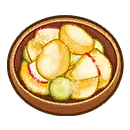 Ensalada de patatas |
80 G | Disponible al inicio |
| 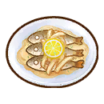 Pescadito marinado |
440 G | Alcanza el nivel 6 en la habilidad de cocina. | |
| Sopas | 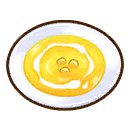 Potaje amarillo |
130 G | Disponible al inicio |
| 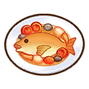 Acqua pazza |
380 G | Alcanza el nivel 5 en la habilidad de cocina. | |
| Entrantes | 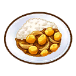 Arroz con curry |
150 G | Disponible al inicio |
| 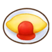 Tortilla |
140 G | Disponible al inicio | |
| 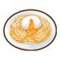 Pasta a la carbonara |
530 G | Alcanza la habilidad de cocina Lv.8 | |
 Pasta de peperoncino |
920 G | Alcanza la habilidad de cocina Lv.9 | |
| 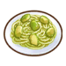 Pasta a la genovesa |
950 G | Alcanza la habilidad de cocina Lv.10 | |
| Postres | Flan |
210 G | Disponible al inicio |
| 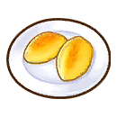 Boniatos caramelizados |
410 G | Disponible al inicio | |
| Otros | 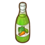 Zumo de verduras |
70 G | Disponible al inicio |
| 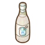 Bebida de yogur |
140 G | Disponible al inicio |